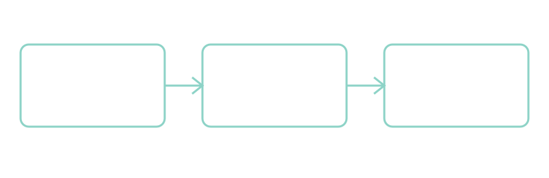

Pencil draws. Navigate mode enables swipes.
Choose Pen, Highlight or Erase. Mouse drawing also works.
Use Navigate to select text or follow this link.
∂u/∂t + u · ∇u = −∇p + ν∇²u
Write a derivation below. Reload to check persistence.

Highlight part of the workflow. Press ↓ for the next vertical slide.
Each slide has its own undo / redo history.
Use the canvas icon for more space; More → Export JSON
Import replaces this presentation’s complete annotation set.
Export first if you want to keep both versions.